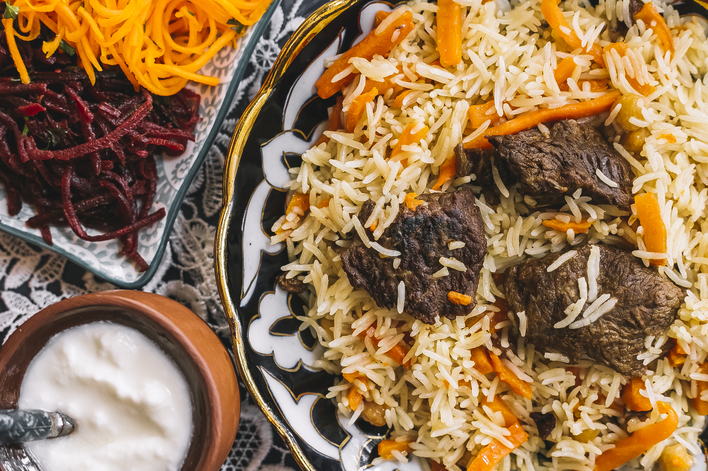

Pilau Recipe

Description
This is a flavorful and aromatic pilau recipe that you can easily prepare at home.
Ingredients
- 2 cups basmati rice
- 1 onion, finely chopped
- 2 cloves garlic, minced
- 1 teaspoon cumin seeds
- 1 teaspoon turmeric powder
- 1 teaspoon garam masala
- 2 cups chicken or vegetable broth
- Salt to taste
Instructions
- Rinse the basmati rice under cold water until the water runs clear.
- Heat the broth in a pot and add the chopped onion and minced garlic.
- Stir in the cumin seeds, turmeric powder, and garam masala.
- Add the rinsed rice and salt to taste.
- Bring the mixture to a boil, then reduce the heat to low and cover.
- Cook for about 15-20 minutes or until the rice is tender and the broth is absorbed.
Back to Home